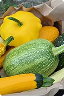
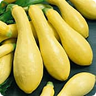

Title000
Title000XX%
Title000
Title000XX%
Summer squash is a tender squash, picked young and immature so that its skin is thin and edible. They aren’t able to be stored as long as winter squash and are best picked and eaten young.
Summer squash is a wonderful vegetable to grow in the home vegetable garden. Summer squash can be planted in rows or in raised beds. They can even be planted in large containers.


The darling of summer squashes, zucchini is one of the most widely-known and popular squashes available. It flourishes in almost any circumstance, producing a huge bounty off just one plant.
Common Ingredients
Ingredient
Ingredient
 Ingredient
Ingredient
Images: Getty Images. Data: en.wikipedia.org · anothersite.com · coolfacts.com Hero image: Holy town Varanasi and the river Ganges